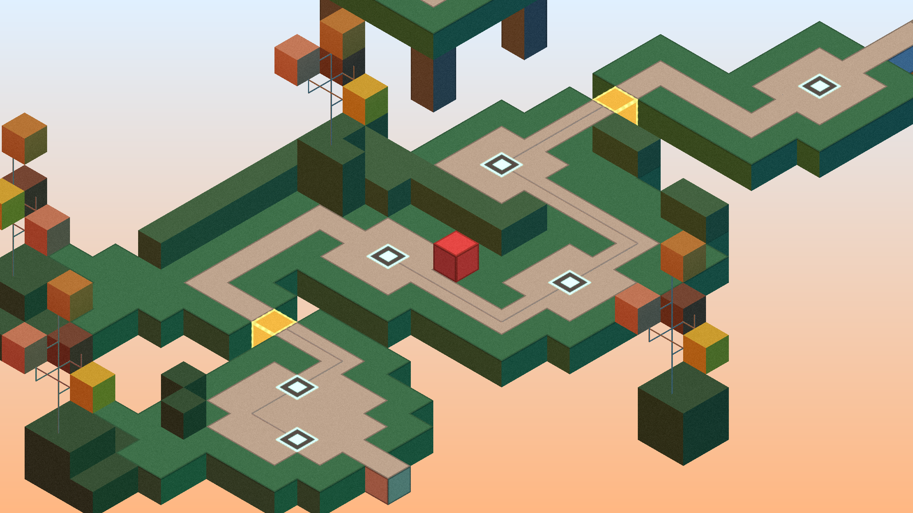
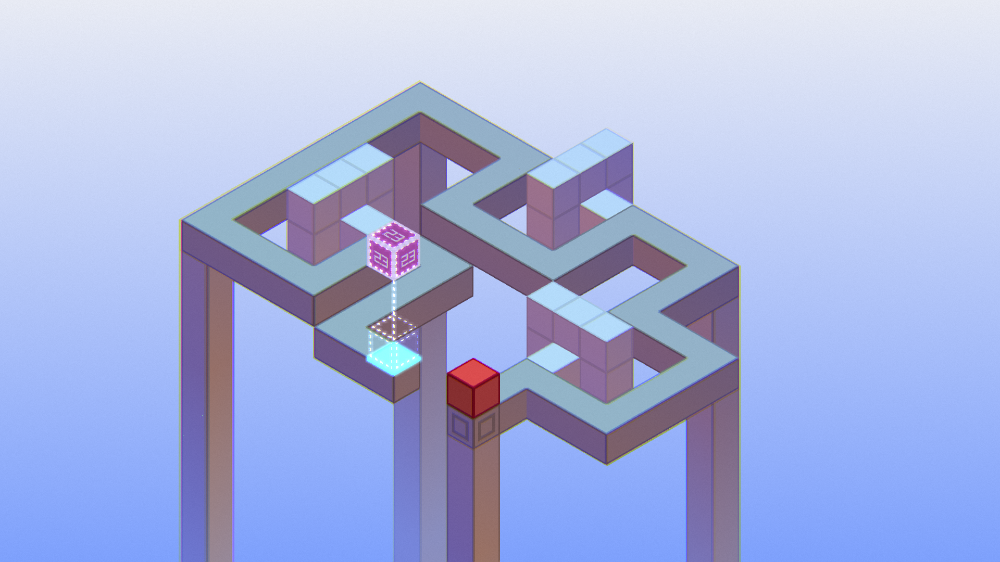
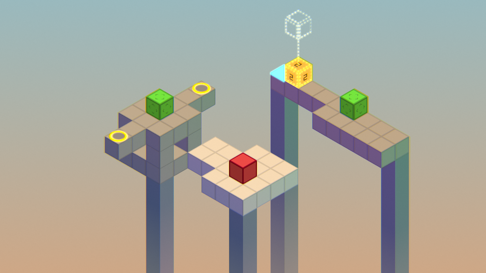
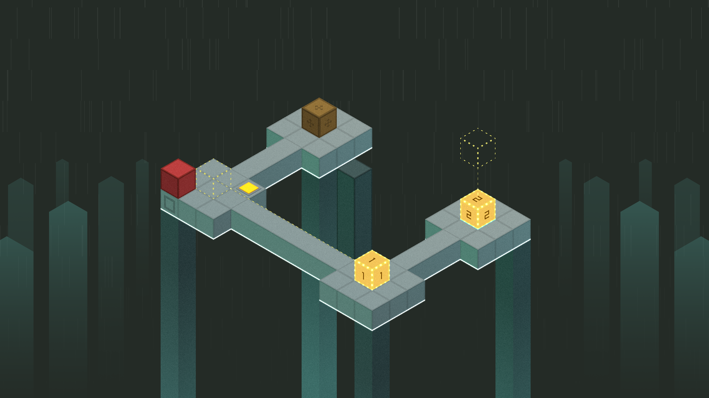

A Little Perspective |
|
|
Game by Tad Cordle Music by Michael Reilly Narration by Jonny Kaufmann and Del Rhys Buy the game or download the demo on Steam.  A Little Perspective is a grid-based puzzle game with unique twists revolving around line-of-sight, object permanence, and spatial awareness. Rotate the camera to change your perspective - create new pathways, sidestep obstructions, and exploit impossible physics to solve the game's many non-euclidean challenges. Game features: - 200+ puzzles built around the game's mind-bending properties - An open hub that gives you freedom to choose how you progress - A compelling narrative that unfolds as you progress deeper into the game, with twists and turns as you gain new insights - Multiple control schemes - customizable keyboard and gamepad controls + fully playable with just a mouse - Released on Windows, macOS, and Linux/SteamOS (Steam Deck verified!)    The game is a remake/upgrade of my most popular Dreams project under the same name, which took about 3 months to build/release. The remake was built in my free time using Raylib and FMOD and took about 2.5 years to complete. |